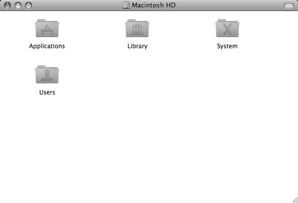
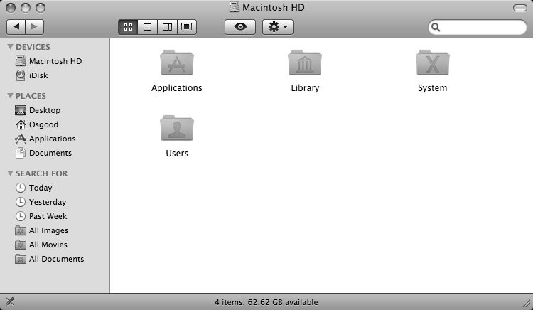

The Toolbar Visible Property
In Mac OSX, Finder windows were redesigned for greater functionality and ease of use. One of the new window features is the Toolbar area located at the top of a Finder window. This area contains display, navigation, and action tools available in the Toolbar options sheet that appears when you’ve chosen “Customize Toolbar…” from the Finder’s View menu.
The toolbar visible property, introduced in Mac OSX version 10.3, has a value of true or false to indicate whether the Toolbar is visible on the targeted Finder window. If the value is true, then the Toolbar is visible. If the value is false, then the window displays without a Toolbar.
As a read/write property, meaning its value can be accessed and edited, the value of the toolbar visible property can be changed to toggle the display of a Finder window’s Toolbar. Try these scripts:
 Scripts can show or hide a Finder window’s toolbar.
Scripts can show or hide a Finder window’s toolbar.
tell application "Finder" to
set toolbar visible of the front Finder window to false
{kind=link}

A Finder window without a toolbar.
 A script to restore the toolbar to the frontmost Finder window.
A script to restore the toolbar to the frontmost Finder window.
tell application "Finder" to
set toolbar visible of the front Finder window to true
{kind=link}

A Finder window with a toolbar.
Property values that are either true or false are called boolean values. You’ll see this term used throughout the rest of this book.